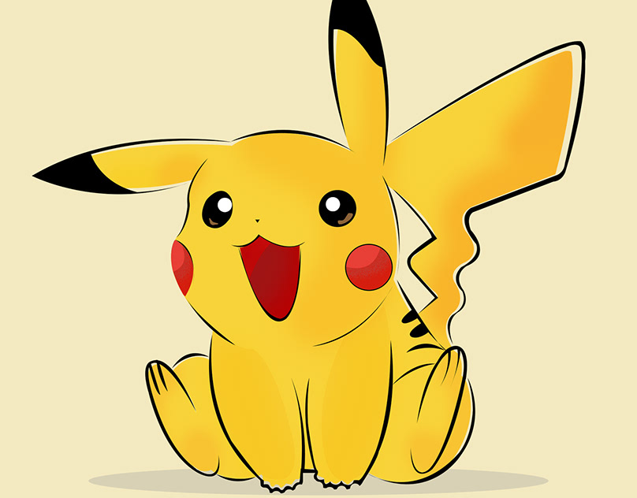
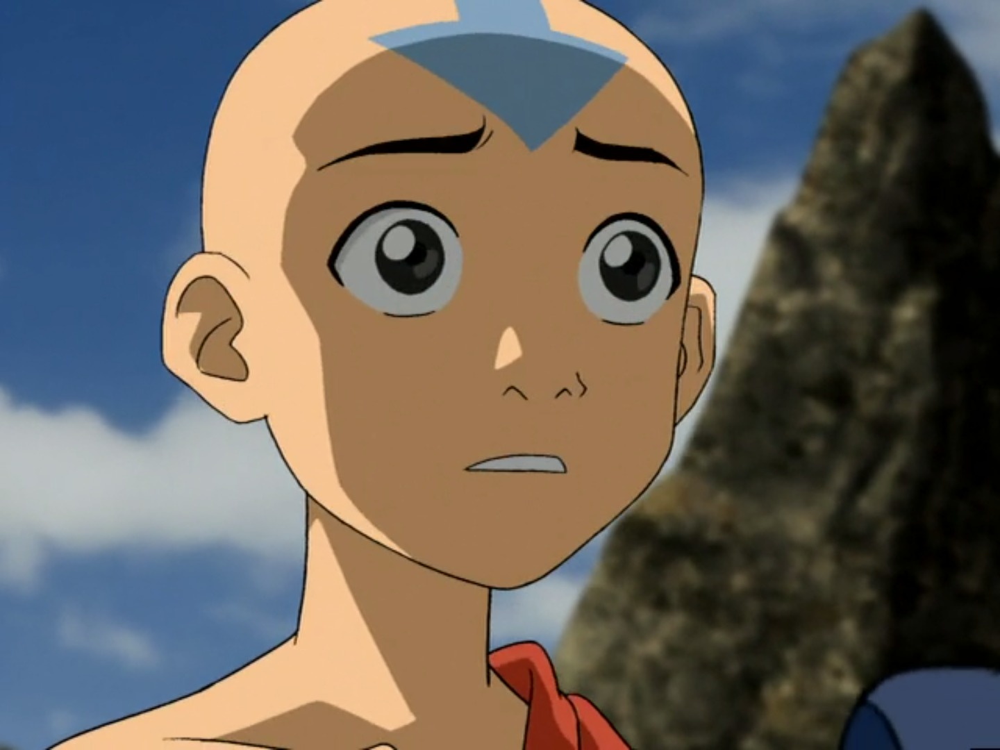
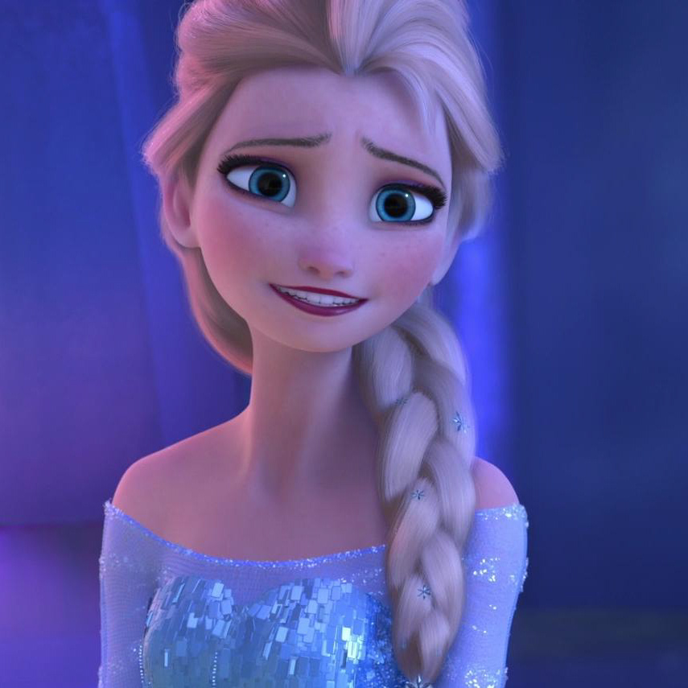
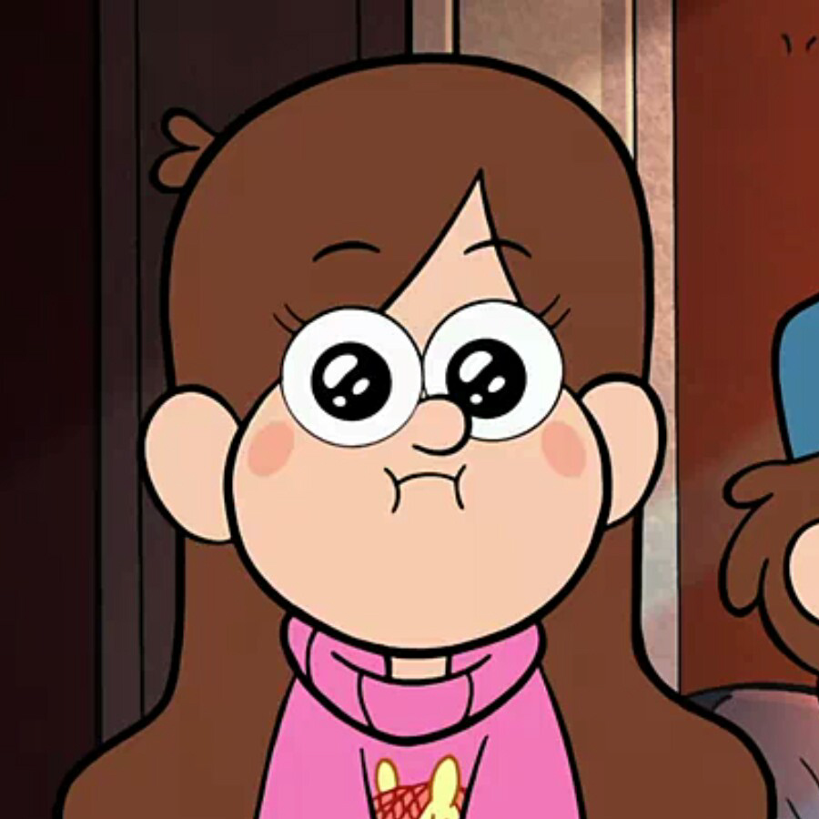

На протяжении всей телевизионной истории появлялись самые популярные персонажи мультфильмов. Они дарили радость не только детям, но и взрослым. Возможно, что этот топ станет поводом пересмотреть или познакомиться впервые с мультфильмами и их персонажами.
1 место
Пикачу
 Пикачу — самый известный и популярный среди всех Покемонов. Именно его выбрали постоянным спутником главного героя аниме Эша. Пикачу — единственный Покемон, который неизменно появляется во всех сериях аниме и во всех полнометражных фильмах.
2 место
Губка Боб
 Губка Боб Квадратные Штаны - вымышленный главный персонаж американского анимированного сериала с таким же названием.
Он чрезвычайно решителен и часто не останавливается ни перед чем, чтобы выполнить задачу.
Он также несколько драматичен для людей, которые добры к нему и бывает слишком самоуверенным.
Губка Боб Квадратные Штаны - вымышленный главный персонаж американского анимированного сериала с таким же названием.
Он чрезвычайно решителен и часто не останавливается ни перед чем, чтобы выполнить задачу.
Он также несколько драматичен для людей, которые добры к нему и бывает слишком самоуверенным.
3 место
Аанг
Аанг - весёлый, обожающий приключения и обладающий чувством юмора, но несколько наивный юноша. Ещё в детстве он побывал во многих уголках мира, и кочевник по-прежнему ищет новых впечатлений , будь то новые места или люди.
4 место
Эльза

Со стороны Эльза предстает сдержанной и замкнутой, но внутри у нее бушует настоящая буря эмоций ей приходится жить в страхе и постоянно подавлять свой волшебный дар. Юная принцесса может управлять снегом и льдом, но однажды, не справившись со своими силами, она подвергла опасности свою младшую сестру Анну.5 место
Мейбл Пайнс
Мэйбл Пайнс безнадёжная оптимистка, смешная и энергичная девочка, полная духом. Она идёт по миру с улыбкой и вязанными свитерами. С этим характером и бесстрашным любопытством, она помогает своему брату с решением некоторых тайн